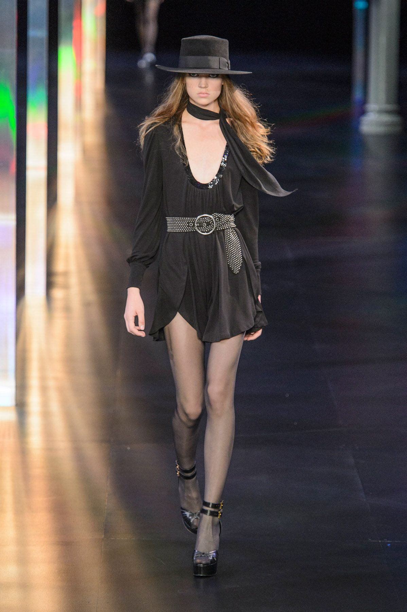
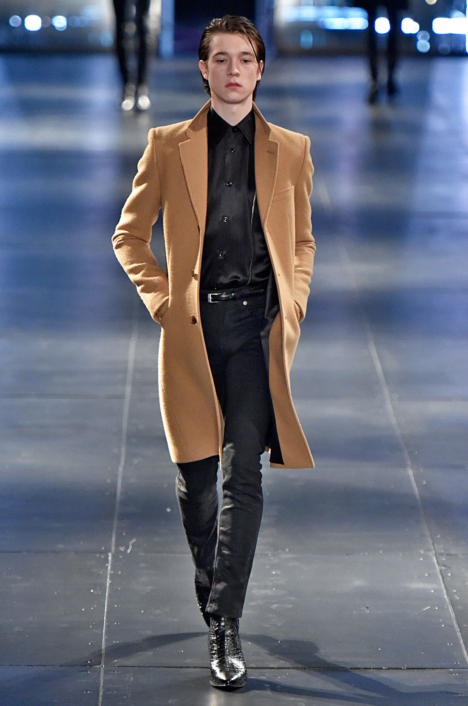

MACACÃO CINTO TOMARA QUE CAIA, COM CALÇA DE PERNAS LARGAS COM BORDADO CASSANDRE NO BOLSO LATERAL E UM BUSTIER INTERNO.
VESTIDO SAFARI COM CINTO NA ALTURA DO JOELHO FEITO COM ALGODÃO ORGÂNICO, COM ZÍPER BIDIRECIONAL E TOP DE MANGA COMPRIDA COM OMBROS CAÍDOS E BOLSOS DE REMEÇÃO.
MACACÃO CINTADO FEITO COM ALGODÃO ORGÂNICO, COM UM TOP DE MANGA COMPRIDA COM OMBROS ACOLCHOADOS, BOLSOS DE REMENDO E CALÇAS DE PERNAS LARGAS.
A **Saint Laurent** apresenta uma **coleção Primavera-Verão 2024** que mistura elementos masculinos e femininos, mantendo a sofisticação e a usabilidade da marca. A silhueta principal permanece nítida, com a finalidade de criar uma inesperada leveza de construção. Calças de cintura alta combinam-se com ternos, e ombros não exagerados em jaquetas sob medida revelam-se voltados para o futuro. Tecidos de alta costura como mousseline são usados de forma inovadora, e estampas de oncinha e listras misturadas conferem um caráter oportuno. Uma coleção que ressoa entre aqueles que apreciam um estilo duradouro e uma estética clássica ¹². 🌟.